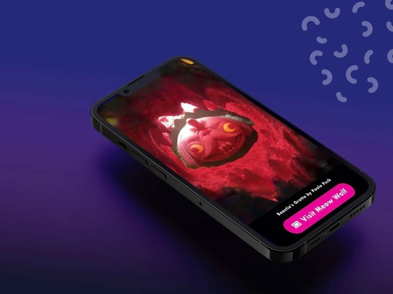
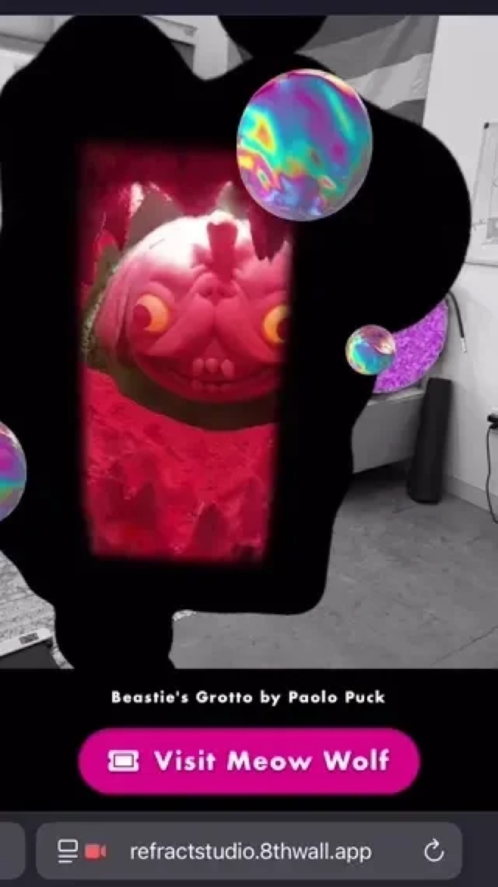
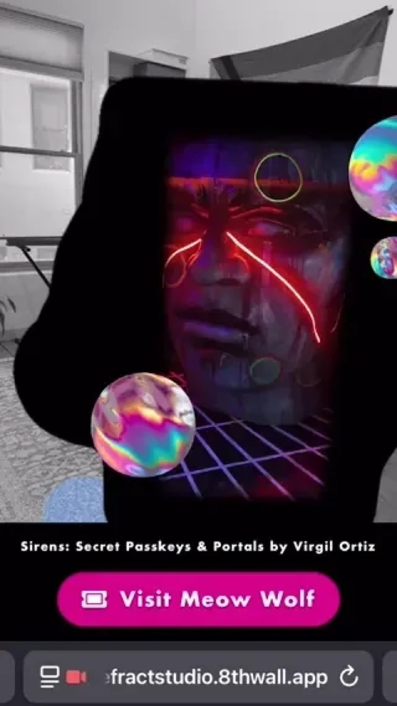

Augmented reality portals to the House of Eternal Return
Six WebAR portals across New Mexico let people step into rooms from Meow Wolf's House of Eternal Return using only their phone browser.
The exhibit was captured with Scaniverse, and the scans became lightweight Gaussian splats that kept the dense texture of the spaces and ran well on mobile.
The project moved from storyboards and early 8th Wall prototypes through 3D scanning and visual development with Shandiin Yazzie Woodward. The final portals combine the scanned spaces, custom portal artwork, audio, and a direct path to visit the physical exhibit.


